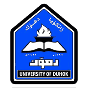
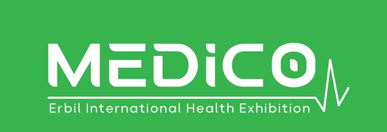
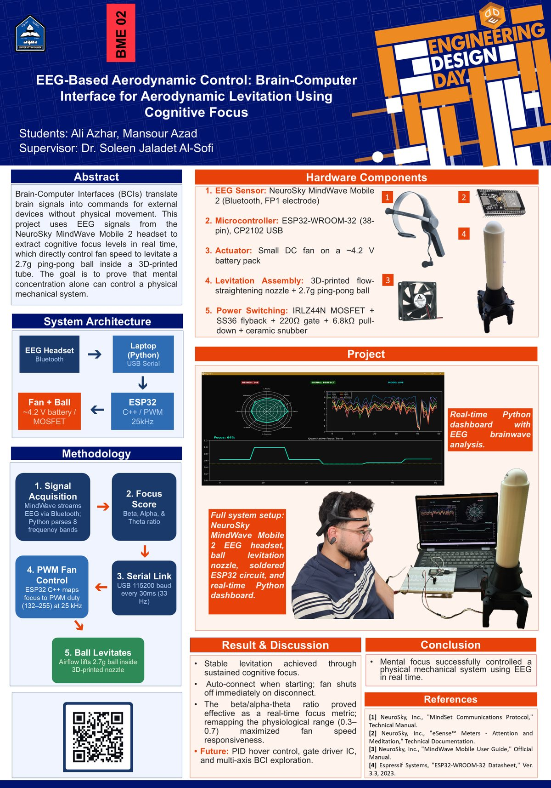
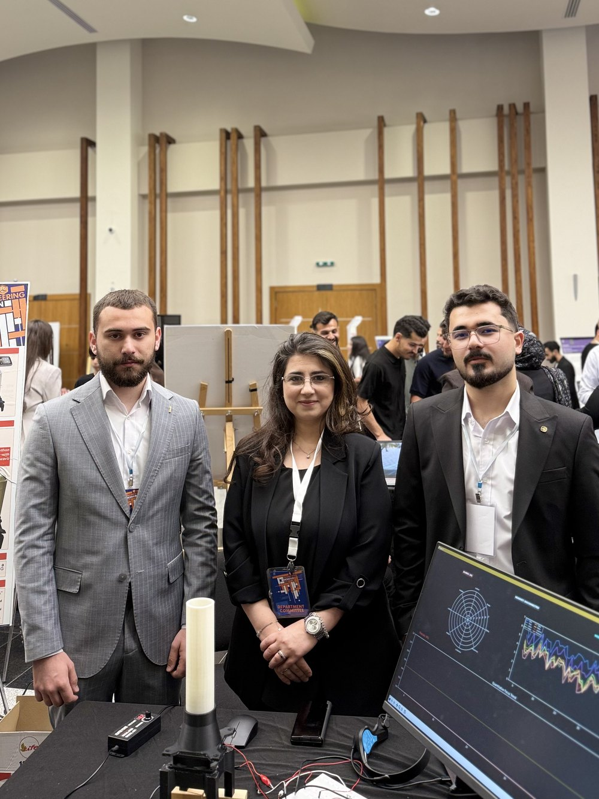
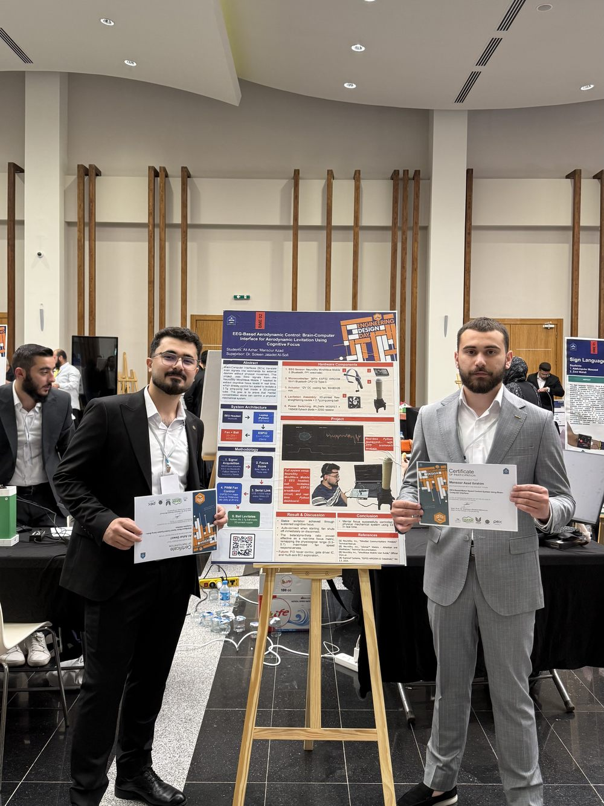
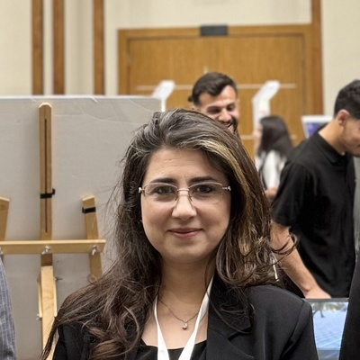
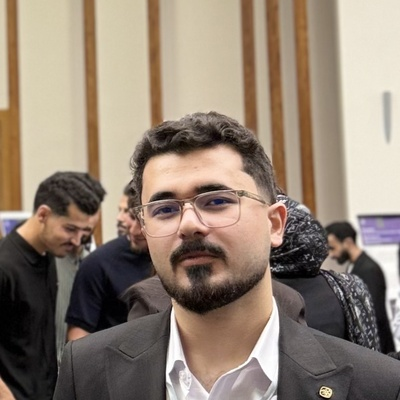
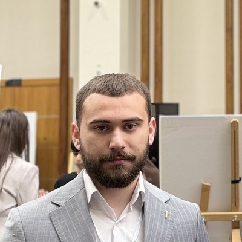

A prosthetic hand
Take the fan off the end and put a robotic hand there instead. The same number from 0 to 100 that sets fan speed can set how far the fingers close. This is the project's declared next step.
University of Duhok · Biomedical Engineering
Control a machine with your mind — no movement, no touch.
One electrode on the forehead reads your concentration. A fan speeds up. A ball rises inside a tube. Nothing is pressed, spoken or moved.
Selected for MEDICO 2026, Erbil · MedStar section


The whole project on one sheet, as presented at the 13th Engineering Design Day and updated for the current build. It is an A0 poster, so open it full size to read it properly — on a phone the version below is an overview.

Five steps, from a thought to a moving motor.
Thinking makes neurons fire together. That produces electrical activity at the scalp measured in millionths of a volt.
A NeuroSky MindWave Mobile 2 — one dry electrode on the forehead, one clip on the ear. It splits the signal into eight frequency bands and sends them over Bluetooth, once a second.
A Python program weighs the focus bands (Beta) against the relaxation bands (Alpha and Theta). The ratio becomes one number between 0 and 100, sent to the microcontroller every 30 milliseconds.
That number sets how fast the fan turns, using 25 kHz PWM through a MOSFET. The switching frequency sits above human hearing, so the fan is silent.
Air rises through a 3D-printed nozzle and holds a 2.7 g ping-pong ball in the air. Concentrate and it climbs. Relax and it falls. The whole loop takes 60–100 milliseconds.
Drag to change the focus value. The duty cycle is calculated exactly the way the firmware on the ESP32 calculates it. The tube is an illustration.
55% focus
185/ 255 duty cycle
Fan running
The ball is only there so you can see the signal. What the project actually built is a control channel that starts in the brain and ends at a motor — and a motor is the part that does the work in a wheelchair, in a prosthetic hand, in almost any assistive device.
Take the fan off the end and put a robotic hand there instead. The same number from 0 to 100 that sets fan speed can set how far the fingers close. This is the project's declared next step.
A powered wheelchair needs exactly what the fan needs: a motor told how fast to turn. For someone who cannot hold or push a joystick, concentration is a control input that does not require a hand.
Put four options on a screen — water, food, help, move me — and let the focus level choose between them. For a person with ALS or a spinal-cord injury who has lost movement but not thought, that is a way to be understood without speaking.
Said plainly: none of those three are built yet, and a single electrode can only tell how hard someone is concentrating — not what they are thinking. What is built and working is the layer everything above would stand on: brain to motor, in under a tenth of a second, from parts anyone can buy.
The build has changed since it was first shown. The electronics have moved off the breadboard onto a soldered board inside a 3D-printed brain-shaped enclosure, and the big bench-powered fan has been replaced by a small one running on batteries. The first four photos are the current version. The last is the stand running at the 13th Engineering Design Day, University of Duhok, before those changes.



Supervisor
Dr. Soleen Jaladet Al-Sofi
Department of Biomedical Engineering, College of Engineering, University of Duhok


Department of Biomedical Engineering · College of Engineering · University of Duhok
Full project title: EEG-Based Motor Speed Control System Using a Brain–Computer Interface
| Part | Role |
|---|---|
| NeuroSky MindWave Mobile 2 | Single dry electrode at Fp1 with an ear-clip reference. Sends 8 band powers over Bluetooth |
| ESP32-WROOM-32 | Receives the focus value over USB serial and generates the PWM |
| Q1 — IRLZ44N | Logic-level N-channel MOSFET, low-side switch for the fan |
| D1 — SS36 | Schottky flyback diode across the fan, cathode to V+. Clamps the inductive spike when the fan switches off |
| R1 — 220 Ω | Limits gate inrush current during fast switching |
| R2 — 6.8 kΩ | Gate pull-down. Holds the MOSFET off whenever the ESP32 pin is not actively driving it, including during reset and boot |
| C1 | Ceramic snubber capacitor across the fan, in parallel with D1. Damps high-frequency switching noise. |
| Small DC fan | Airflow source, driven by PWM from the battery rail |
| Battery pack (V+ ≈ 4.2 V) | Powers the fan through connector J1. The rig is self-contained — no bench supply |
| Ping-pong ball (2.7 g, 40 mm) | Makes the signal visible |
| 3D-printed nozzle and tube | PLA, designed in Fusion 360. Directs the airflow and re-centres the ball |

The headset reports eight band powers once per second. The formula weighs the two Beta bands, which rise with concentration, against the Alpha and Theta bands, which rise with relaxation.
raw_focus = (L-Beta + H-Beta)
/ (L-Alpha + H-Alpha + Theta + 0.1)| Band | Range | State |
|---|---|---|
| Delta | 0.5–4 Hz | Deep sleep |
| Theta | 4–8 Hz | Drowsiness, relaxation |
| Low-Alpha | 8–10 Hz | Relaxed |
| High-Alpha | 10–13 Hz | Relaxed, mildly alert |
| Low-Beta | 13–17 Hz | Light focus |
| High-Beta | 17–30 Hz | Strong focus |
| Low-Gamma | 30–40 Hz | High-level cognition |
| Mid-Gamma | 40–100 Hz | Intense concentration |
All eight are present in the brain at the same time. What changes is their relative power.
An earlier build used a large fan rated for 12 V, driven well past its rating from an adjustable bench supply, because at 12 V the airflow was not strong enough to hold the ball up. These were the results:
| Supply | Result |
|---|---|
| 12 V | Ball lifts slightly, then drops back |
| 15 V | Lifts, but holds no stable height |
| 18 V | Sits around the middle of the tube |
| 20–25 V | Full control range, bottom to top. Best |
Above 25 V the ball still did not fly out. The tapered nozzle creates a low-pressure region by the Bernoulli effect, which pulls the ball back to the centre. That is a property of the design, not luck.
The current build uses a smaller fan running from a battery pack at about 4.2 V, so it no longer needs a bench supply and the whole rig is self-contained. The test above is kept because it is what led there.